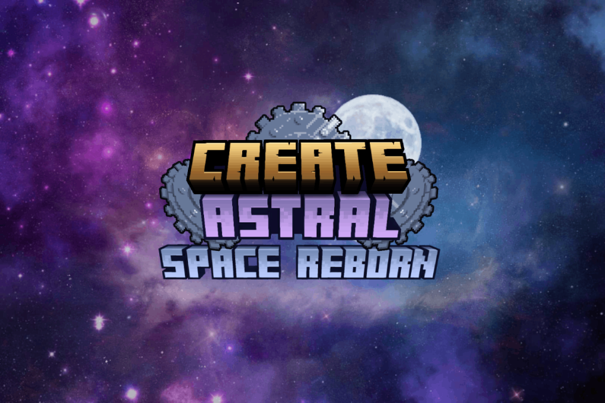

Create: Astral — это сборка, в которой основной акцент сделан на покорение космоса с тесной интеграцией механик Create. Это уникальная концепция, где автоматизация и инженерия напрямую связаны с освоением планет и выходом за пределы мира. Подобная реализация встречается крайне редко, что делает сборку особенной на фоне других. В сборке присутствует прямая сюжетная ветка квестов, которая направляет игрока через прогрессию и помогает постепенно изучать все этапы развития. При этом игрок не ограничен жёсткими рамками — ты можешь двигаться в собственном темпе, исследуя технологии и космос так, как тебе удобно.
← Назад